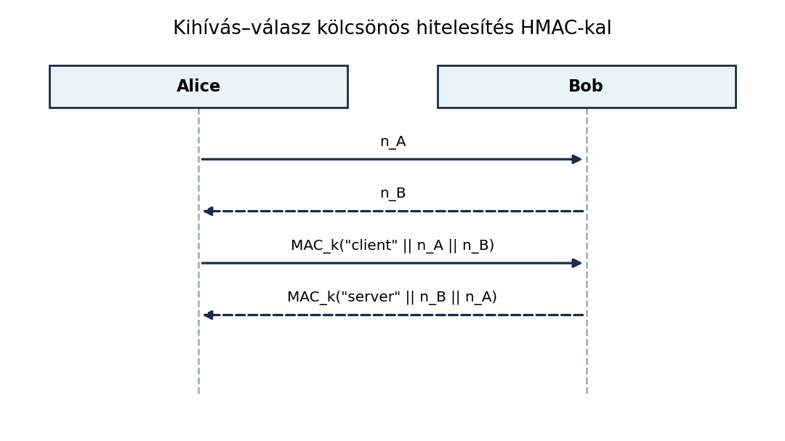

Amikor bejelentkezünk egy weboldalra, a leggyakoribb minta az, hogy a jelszót egy TLS-csatornán elküldjük, a szerver pedig a jelszót sózott, lassított hash formában – jellemzően Argon2id-del – tárolja. Ez a modell megvédi a jelszót a hálózati lehallgatótól (TLS), és megnehezíti az offline támadást, ha a szerver adatbázisa kiszivárog (só + lassú hash). De két érzékeny pont marad: ha a TLS nem teljes vagy egy rosszindulatú szerver kaparintja meg a jelszót, akkor a jelszó maga a támadóhoz kerül; ha pedig a szerver hitelesítőadat-tárolása hibás, a kliens ezt nem tudja ellenőrizni.
A kihívás–válasz (challenge-response) hitelesítés ezt a problémát úgy oldja meg, hogy a jelszó vagy egy abból származtatott titok nem utazik a vonalon. A szerver küld egy friss, kiszámíthatatlan értéket – nonce-t –, a kliens pedig a közös titokkal és a nonce-szal számított HMAC-címkét küldi vissza. A szerver ugyanazzal a titokkal ellenőriz. A szimmetrikus kihívás–válasz ára, hogy a szerver jelszó-egyenértékű titkot tárol: ha ez lassított hash-ből származik, az csak az offline törést lassítja, a kiszivárgott értékkel való belépést nem akadályozza. A lehallgató lát egy választ, de az egy másik nonce-ra már nem érvényes.
A kihívás–válasz önmagában nem hitelesíti a szervert, ezért nem véd a közbeékelődés ellen; erre a jelszóval hitelesített kulcscsere (PAKE) a megoldás, amit a Jelszóval hitelesített kulcscsere: SRP és OPAQUE alfejezetben tárgyalunk.
Az alábbi protokollrajz egy kölcsönös, HMAC-kal védett kihívás–válasz
hitelesítést mutat. A felek mindkét irányban bizonyítják a közös kulcs
ismeretét, és az iránycímkék ("client",
"server") megakadályozzák, hogy egy választ
visszatükrözzenek a másik félnek.

A leírás szerint: Alice generál egy , Bob egy nonce-t. Alice válasza , Bob válasza . A sorrend és az iránycímke egyértelműen megkülönbözteti a két irányt.
Definíció. (Friss nonce) Egy érték friss nonce egy protokollfutásban, ha a hitelesítő fél egyenletesen véletlenül választja, és nem használja fel korábbi futásban. A frissesség mellett a kiszámíthatatlanság is fontos: ha a támadó előre ismerné a nonce-t, előre kiszámíthatná a választ.
Definíció. (Kihívás–válasz hitelesítés HMAC-kal) Legyen egy két fél által előzetesen megosztott titkos kulcs. A verifikáló generál egy friss nonce-t, és elküldi a bizonyító -nek. kiszámítja a választ: ahol egy kontextus (például iránycímke, felhasználónév, protokollazonosító). ugyanazzal a kulccsal ellenőrzi érvényességét. A MAC EUF-CMA biztonsága (lásd Az üzenethitelesítő kód és az EUF-CMA biztonság) biztosítja, hogy a támadó, aki nem ismeri -t, nem tud érvényes -t hamisítani, még akkor sem, ha korábban látott más nonce-ra érvényes válaszokat.
Megjegyzés. A kihívás–válasz nem titkosítja a jelszót abban az értelemben, hogy a MAC-címke számítása determinisztikus a nonce-ból; a támadó, aki lehallgatja a nonce-t és a választ, nem kapja meg a jelszót, de offline kipróbálhat jelszójelölteket, ha ismeri a MAC-számítás módját. A jelszóalapú változatoknál ezért a titok legyen erős, vagy a protokoll legyen PAKE.
Példa (HMAC-SHA256 kihívás–válasz). Alice és Bob rendelkezik egy 32 bájtos közös titkos kulccsal . Bob hitelesíteni akarja Alice-t. A protokoll:
A HMAC-SHA256 a
kulccsal és a "client" iránycímkével számított
;
a kimenet 32 bájt. A véletlen nonce hossza legalább 128 bit, hogy
ütközés és újrafelhasználás valószínűsége elhanyagolható legyen.
Python-illusztráció:
# OKTATÁSI CÉLRA – NEM ÉLES HASZNÁLATRA
import hmac, hashlib, secrets
def make_key():
return secrets.token_bytes(32) # közös titkos kulcs
def server_challenge():
return secrets.token_bytes(16) # friss nonce
def client_response(key, nonce):
ctx = b"client" + nonce
return hmac.new(key, ctx, hashlib.sha256).digest()
def verify(key, nonce, response):
expected = client_response(key, nonce)
return hmac.compare_digest(expected, response) # konstans idejű
# Példafutás
k = make_key()
n = server_challenge()
r = client_response(k, n)
print(len(r), r.hex()[:16], verify(k, n, r))Várt kimenet: 32 (a HMAC-címke 32 bájt), a hexadecimális
kimenet első 16 karaktere véletlenszerű, és True (a
visszaigazolás sikeres). A secrets.token_bytes és a
hmac.compare_digest a biztonságos elemek; a
random modul és az == nem megengedett.
Visszajátszás elleni védelem. Ha a támadó lehallgatja a nonce-t és a választ, és később megpróbálja visszajátszani, a szerver új nonce-t generál, így a régi válasz érvénytelen lesz. A nonce kiszámíthatatlansága miatt a támadó nem tud előre számolni, a MAC biztonsága miatt pedig nem tudja a választ a nonce ismeretében hamisítani.
Közbeékelődés (MITM). A kihívás–válasz HMAC-kal nem hitelesíti a szervert a kliens felé. Ha a támadó középen áll, továbbíthatja a kihívást és a választ, és mindkét fél sikeresnek hiszi a hitelesítést. A mai gyakorlat ezért a jelszavas hitelesítést TLS-en belül végzi: a TLS tanúsítvánnyal hitelesíti a szervert, és a kihívás–válasz csak védelmi réteg lehet. A PAKE protokollok ezt a hiányosságot kriptográfiailag oldják meg.
Kliensoldali hash mint „jelszó”. Gyakori tévhit, hogy a kliensoldalon kiszámított biztonságosabb, mert „a jelszó nem kerül a szerverre”. Ha a szerver -t tárol, akkor ez a hash hitelesítő adatként viselkedik: aki ellopja, az a jelszó ismerete nélkül is beléphet. Az ilyen pass-the-hash támadások miatt a kliensoldali hash nem helyettesíti a szerveroldali sózott, lassított hash-t. Ha a jelszó nem akarjuk elküldeni, akkor azt jelszóval hitelesített kulcscserével érjük el, nem pedig a hash egyszerű átvitelével.
Támadás. Tekintsük a következő naiv, egyirányú protokollt, amelyben Alice hitelesíti magát Bobnak:
"Alice"Az alábbi ábra két futást rajzol egymás mellé, és külön mutatja a két támadástípust: a reflexiót (Mallory Bob saját kihívását egy második, szintén Bobbal nyitott futásban küldi vissza) és a továbbítást (Mallory egy valódi Alice-szal folytatott futás üzeneteit közvetíti).
Mallory (a támadó) szeretné elhitetni Bobbal, hogy ő Alice. A kulcs nem áll rendelkezésére, de a következő lépésekkel mégis sikeres lehet:
"Alice""Bob" (Mallory Bobnak adja ki magát)"Alice" (Alice nem hitelesíti Bobot, ezért vakon
részt vesz)Bob ellenőrzi a választ a saját nonce-jával, és érvényesnek találja; Mallory hitelesítője lett Alice-nak. A támadás azért működik, mert Alice nem hitelesíti Bobot, és a válasz nem kötődik munkamenethez vagy irányhoz. Pontosan fogalmazva ez továbbításos (orákulum-) támadás: Mallory Alice-t használja válaszadó orákulumként egy második futásban. Az iránycímke és a két nonce a valódi reflexió ellen véd (amikor a támadó a felet a saját kihívásával, egy második, ugyanazzal a féllel nyitott futásban szembesíti). A tisztán továbbító közbeékelő ellen, ahol Alice valóban részt vesz, a címke nem véd: ehhez a kapcsolat kötése kell (például a TLS-kapcsolat exporter-értékének vagy a felek által látott transzkriptnek a MAC-ba foglalása), illetve PAKE. A kölcsönös, iránycímkés protokoll ezért csak a reflexiót állítja meg.
Jelszó TLS-en, szerveroldali Argon2id. A legtöbb webes bejelentkezés ma TLS 1.3-on keresztül zajlik: a kliens a jelszót a hitelesített csatornán küldi, a szerver ellenőrzi a sózott, Argon2id-del hasított tárolt értékkel. Ez a minta kihasználja a TLS szerverhitelesítését és a lassított hash offline védekezését. A kihívás–válasz ide nem szükséges, mert a TLS védi a jelszót a hálózaton.
Credential stuffing és sebességkorlát. Ha egy támadó más szolgáltatásokból kiszivárgott jelszó–felhasználónév párokat próbál ki automatikusan, akkor credential stuffing támadást hajt végre. Mivel a felhasználók gyakran újrahasználják a jelszavakat, a támadás hatékony. A védekezés elsősorban nem titkosítási kérdés: IP- és fiókalapú sebességkorlát (rate limiting), késleltetés, lockout, CAPTCHA, valamint a kompromittált jelszavak szűrése. A támadó nem a kriptográfiai protokollt töri, hanem a próbálkozások szabadságát használja ki.
Régi protokollok: NTLM és CHAP. A Microsoft NTLM hitelesítése a jelszó NT-hash-ét használja, ezért a hash ellopása pass-the-hash bejelentkezést tesz lehetővé anélkül, hogy a jelszó ismert lenne. A CHAP (RFC 1994) jelszóval számolt kihívás–válasz protokollt használ, de a szervernek ismernie kell a jelszót, ezért a szerver kompromittálódása esetén a jelszavak kiszivárognak. Mindkét példa azt mutatja, hogy a hitelesítési protokoll és a tárolás módja elválaszthatatlan.
Kliensoldali hash mint jelszó. A szerver -t tárol, és a kliens -t küld. Ha az adatbázis kiszivárog, a hash közvetlenül felhasználható; a támadó nem a jelszót, hanem a hash-t lopja el, ami ugyanolyan hitelesítő adat. Helyes: a jelszót TLS-en küldjük, a szerver sózott, lassú hash-t tárol (Argon2id).
Nonce újrahasználat vagy determinisztikus kihívás. Ha a szerver mindig ugyanazt a nonce-t küldi, a válasz visszajátszható. A kihívásnak frissnek és kiszámíthatatlannak kell lennie, legalább 128 bites véletlen érték.
Csak egyirányú hitelesítés. Ha a szerver nem bizonyítja magát, a kliens vakon válaszol a kihívásokra; ez továbbításos támadásokhoz és közbeékelődéshez vezet. Helyes: kölcsönös hitelesítés, TLS és csatornakötés; a reflexió ellen az iránycímke, a továbbítás ellen a csatornakötés véd.
Sebességkorlát hiánya. A kriptográfiailag hibátlan kihívás–válasz protokoll sem véd a jelszó-kitalálás ellen, ha a támadó korlátlanul próbálkozhat. Helyes: fiók- és IP-alapú rate limiting, lockout, monitoring.
"client" /
"server") a reflexiós támadás ellen?1. feladat (A). Tervezz egy egyirányú kihívás–válasz protokollt HMAC-SHA256-tal, amelyben Alice hitelesíti magát Bobnak. Add meg az üzeneteket, a nonce hosszát és a válasz számítását.
2. feladat (A). Egészítsd ki az előző protokollt kölcsönös hitelesítéssé úgy, hogy Bob is bizonyítsa magát Alice-nak, és az iránycímkék szerepeljenek.
3. feladat (B). Elemezd a reflexiós támadást a naiv protokoll ellen: add meg a támadó lépéseit, és magyarázd el, mit akadályoz meg az iránycímkés, kölcsönös változat ( a kliens, a szerver oldalon), és mit nem.
4. feladat (B). Írj Python kódot, amely egy friss
nonce-t generál, kiszámítja a kliens válaszát HMAC-SHA256-tal, és a
szerver konstans időben ellenőrzi. A kód használjon secrets
és hmac.compare_digest függvényeket.
5. feladat (C). Bizonyítsd be: ha a HMAC-SHA256 EUF-CMA biztonságos, akkor a kihívás–válasz protokollban egy passzív lehallgató, aki látja a nonce-t és a választ, nem tud később egy eltérő nonce-ra érvényes választ előállítani, amíg a kulcsot nem ismeri. Fogalmazd meg a redukciót.
6. feladat (D). Egy weboldal credential stuffing támadást kap, és a bejelentkezési kísérletek száma nem korlátozott. Sorold fel a védekezési lépéseket, és indokold, miért nem elegendő a HMAC-alapú kihívás–válasz.
1. megoldás. Protokoll:
"Alice"2. megoldás. Kölcsönös protokoll:
3. megoldás. A bemutatott naiv forgatókönyvben a támadó a Bobtól kapott -t továbbítja Alice-nak egy másik munkamenetben, Alice kiszámítja a választ, a támadó pedig visszaküldi Bobnak. A valódi reflexiós támadás szimmetrikus protokoll ellen: Mallory Bobbal két futást nyit. Az elsőben Alice-nak adja ki magát, és Bobtól megkapja -t. A másodikban -t saját kihívásként küldi Bobnak, aki erre -vel felel, és Mallory ezt az első futásba viszi vissza. Iránycímkével Bob válasza , az első futásban viszont -t vár, így a visszatükrözött válasz érvénytelen; a mindkét nonce-ot tartalmazó üzenet ráadásul a két futás nonce-párjához is kötött. A tisztán továbbító közbeékelő (ahol Alice valóban részt vesz) ellen ez nem véd: ehhez csatornakötés (pl. TLS-en belül a TLS exporter beépítése a MAC-ba) vagy PAKE kell.
4. megoldás. A fenti Python-kód megfelel; a
kulcsgenerálás secrets.token_bytes, a válasz
hmac.new, az ellenőrzés
hmac.compare_digest.
5. megoldás. Ha létezik olyan lehallgató, amely a látott pár után egy nonce-ra érvényes -t állít elő, akkor egy EUF-CMA-támadó a HMAC ellen: a HMAC-hoz tartozó oracle-t használja a válasz generálására; a kapott egy új, valid MAC az üzenetre. Így előnye legfeljebb a HMAC EUF-CMA előnye, ami elhanyagolható.
6. megoldás. Védelmi lépések: IP- és fiókalapú sebességkorlát, késleltetés, fiókzárolás, CAPTCHA, anomaly detection, kompromittált jelszavak ellenőrzése. A HMAC-alapú kihívás–válasz nem akadályozza meg a találgatást, mert a támadó a kihívásra adott választ a jelszó birtokában ki tudja számítani; a sebességkorlát a próbálkozások költségét növeli.
A jelszavas hitelesítés modern alapja: a jelszó TLS-en utazik, a szerver sózott, lassított hash-t (Argon2id) tárol. A kihívás–válasz protokoll HMAC-kal lehetővé teszi, hogy a jelszó ne kerüljön a vonalra: a szerver friss, kiszámíthatatlan nonce-t küld, a kliens a közös kulccsal és a nonce-szal számított MAC-ot válaszol. A nonce biztosítja a frissességet, a MAC EUF-CMA biztonsága a hamisítás elleni védelmet. A protokoll azonban nem hitelesíti a szervert, ezért közbeékelődés lehetséges; a megoldás a TLS vagy a PAKE. A kliensoldali hash nem biztonságos, mert a hash maga válik hitelesítő adattá. A reflexiós támadás elkerülése érdekében iránycímkét és mindkét nonce-t be kell építeni a MAC-ba. A credential stuffing ellen a kriptográfia nem elég: sebességkorlát és monitoring szükséges. Továbbvitt eredmény. A kihívás–válasz és a friss nonce kezelése közvetlenül előkészíti a Egyszeri jelszavak, FIDO2 és WebAuthn alfejezetet, ahol a kihívás fogalma a modern token-alapú hitelesítés alapja; a szerveroldali jelszótárolás és a jelszó-alapú protokollok biztonsági problémái pedig a Jelszóval hitelesített kulcscsere: SRP és OPAQUE alfejezetben folytatódnak.
A HMAC specifikációja az RFC 2104-ben található; a HMAC-SHA256
paraméterei és a Python hmac API a dokumentációban
ellenőrizhetők. A CHAP az RFC 1994-ben, az NTLM a Microsoft
protokolldokumentációjában érhető el; a pass-the-hash támadás leírása a
MITRE ATT&CK keretrendszerben is szerepel. Az Argon2id paraméterek
és a credential stuffing elleni ajánlások az OWASP Authentication Cheat
Sheet alapján szerepelnek, de a konkrét iterációszámok és
sebességkorlát-értékek időben változnak, ezért használat előtt
ellenőrizni kell.